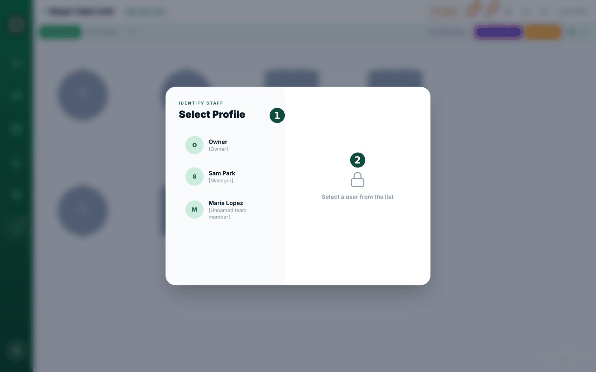
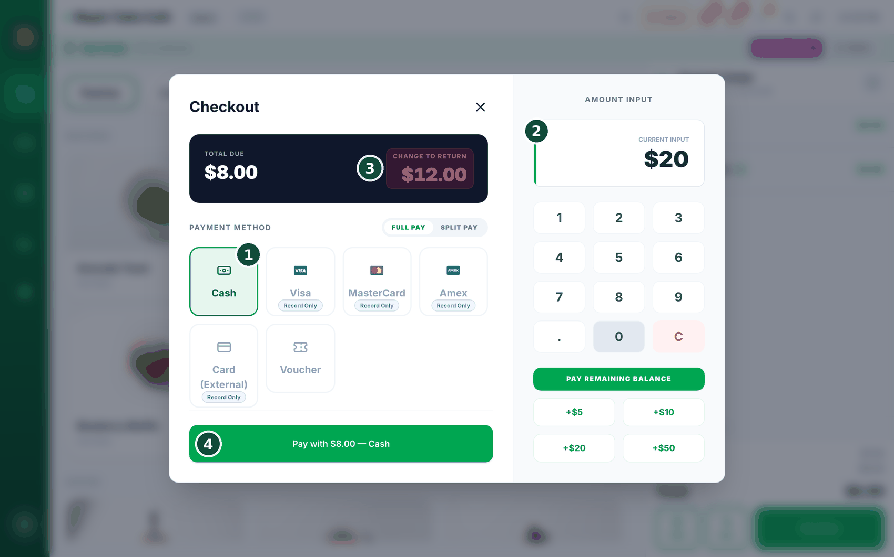
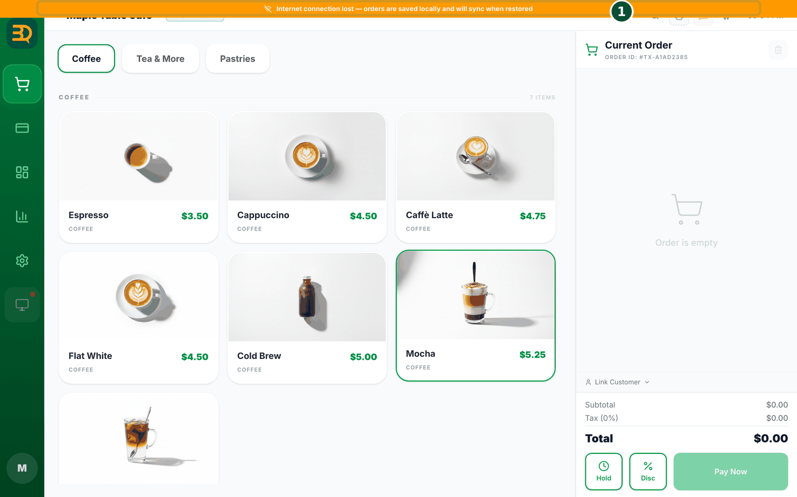

5Inicio rápido para el personal
Una guía de una página para quien atiende la caja por primera vez. Sigue un turno desde la entrada hasta la salida. Cada paso es breve; toque los enlaces cuando quiera la explicación completa.
Pida esto primero al propietario
① Una cuenta de personal a su nombre y un PIN de 4 dígitos (Agregar un miembro del personal) · ② si esta tienda toma los pedidos en el mostrador o en las mesas · ③ a qué gerente llamar para reembolsos o descuentos grandes. No comparta su PIN: el registro de actividad guarda las acciones a su nombre.
Al llegar

- Marcar la entrada: toque la etiqueta de rol de color en la barra superior para abrir el panel Time Clock (Reloj de fichaje). Toque In (Entrada) junto a su nombre e ingrese su PIN de 4 dígitos. Si aparece "Take the POS?", elija Yes (Sí) cuando sea usted quien atiende esta caja. (Se usa en tiendas con el complemento Staff: Personal y permisos).
- Inicio de sesión con PIN y bloqueo por inactividad: en las tiendas que usan Idle Lock (Bloqueo por inactividad), una caja que se deja sola un rato pasa a la pantalla de bloqueo Select Profile. Toque su nombre e ingrese su PIN para continuar. El PIN predeterminado 0000 no sirve para iniciar sesión, así que si el suyo sigue siendo 0000, pida uno nuevo al propietario (Permisos, PIN de gerente y etiqueta de rol, ¿Olvidó un PIN?).
Atender a los clientes
- Tomar el pedido: en el mostrador, toque los productos para agregarlos al pedido y toque Pay Now (Pagar ahora). En las mesas, toque primero la mesa del cliente en el mapa de mesas. Si un cliente se aparta, deje el pedido en espera con Hold (Tomar pedidos, Poner un pedido en espera).

- Cobrar: toque Cash (Efectivo) e ingrese el importe que le entregan; se muestra el cambio. Toque Card (Tarjeta) cuando haya un lector de tarjetas conectado, o un botón de marca de tarjeta (Record Only) cuando la tarjeta se cobró en una terminal aparte. No cierre la pantalla de pago mientras el lector todavía está aprobando una tarjeta. Cuando varias personas comparten una cuenta, use Split (Cobrar, Dividir la cuenta).
- Descuento rápido o producto gratis: toque un producto del carrito para ver los botones Discount (Descuento) y Free (Gratis); para todo el pedido, toque Disc (Desc) en la parte inferior. Ingrese un importe o un %, elija un motivo (Friend · Apology · Staff · Tasting · Mistake) y toque Done (Descuento rápido o producto gratis).
- ¿Quién puede reembolsar?: de forma predeterminada, el propietario y los gerentes pueden reembolsar; un miembro del personal necesita que un gerente (o el propietario) lo apruebe con un PIN. El propietario puede haberlo cambiado en la tabla de permisos, así que cuando un cliente pida un reembolso, llame a un gerente. Los reembolsos se hacen desde Manage › Payment History abriendo el pedido (Reembolsos, permisos).
Cuando algo sale mal

- Se cae internet: aparece una barra naranja arriba. Siga tomando pedidos como siempre: se guardan en el dispositivo y se suben solos cuando vuelve la conexión. Solo los pagos con lector de tarjetas conectado, el envío de mensajes y las nuevas reservas tienen que esperar a internet (Trabajar sin conexión, Qué necesita internet).
- Una tableta de pedidos del personal dice "Not sent to the kitchen": compruebe que la caja principal esté encendida y en el mismo Wi-Fi de la tienda, y luego toque Try again (Reintentar). Toque Entered on Main POS (Ingresado en el POS principal) solo si realmente ingresó el pedido en la caja principal (Pedidos del personal).
Antes de irse
- Ordene los pedidos abiertos: cobre todo lo que esté en espera o sin pagar, o avise a un gerente. Los pedidos sin pagar impiden cerrar el día (Pedidos tardíos y días no cerrados).
- El cajón de efectivo y el cierre del día son tarea de los gerentes y del propietario: el menú Cash Drawer solo aparece para ellos. Si usted tenía el cajón a su cargo, cuéntelo y entrégueselo a un gerente (Cajón de efectivo, Informes y cierre del día).
- Marcar la salida: toque la etiqueta de rol, toque Out (Salida) junto a su nombre en el Time Clock e ingrese su PIN. Si aparece "Who takes over?", elija a la siguiente persona en la caja o Return to Owner (Devolver al propietario).
¿Una pantalla desconocida? No la pase tocando sin leer. La mayoría de los mensajes dicen exactamente qué hacer a continuación. Si sigue atascado, llame a un gerente o consulte Solución de problemas y soporte.
Temas relacionados
¿Necesita más ayuda?
Puede enviar un ticket de soporte desde la app en Settings › Support.